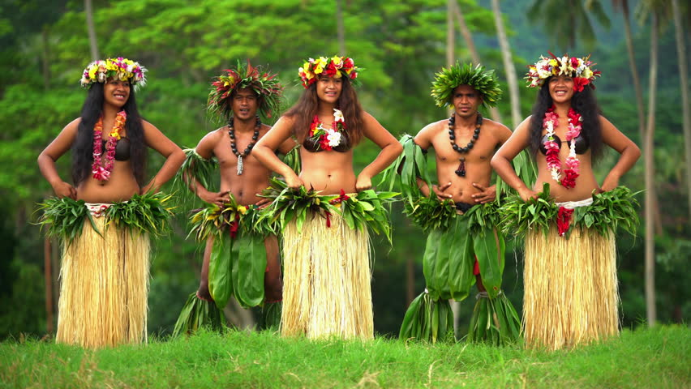
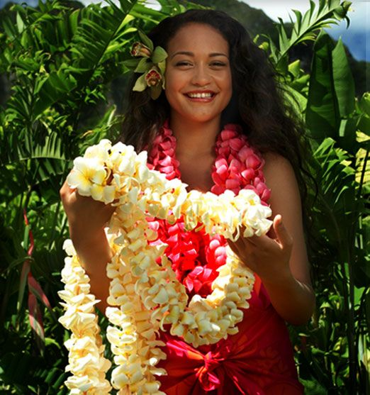
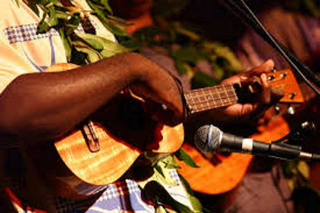
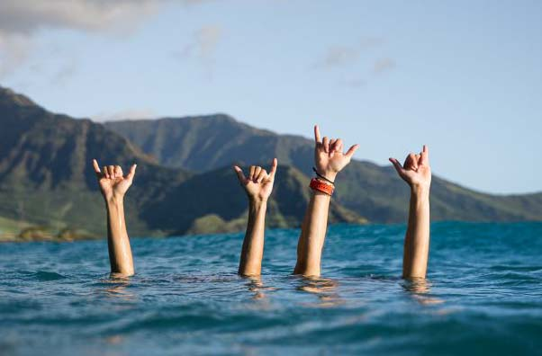

Culture
Sandy beaches, blue-sky waters, palm tree-lined shores, amazing volcanoes, and glorious sunsets are some of the things that probably come to mind when you think of Hawaii. But a beautiful natural environment is not all there is to enjoy in this earth-bound paradise, as this group of islands is also home to people with a rich and diverse culture.
The culture of the Native Hawaiians is about 1,500 years old and has its origins in the Polynesians who voyaged to and settled Hawaii. These voyagers developed Hawaiian cuisine, Hawaiian art, and the Native Hawaiian religion.
The culture of Hawaii is expressed in language, music, art, theater, dance, film, cuisine and a multitude of festivals. At the core of each is the spirit of aloha. The "Aloha Spirit" is the coordination of mind and heart within each person. It brings each person to the self. Each person must think and emote good feelings to others.
Dance Hula
Traditional dance of Hawaii
Hula dancers in typical costumes (source: shutterstock.com)
The hula is one of Hawaiian cultural icons. Features colourful costumes and grass skirts, graceful hand movements and the signature swaying hips. Originally a male-only dance, the hula is now an expression of happiness and fun that can be performed by both men and women.
Hula is accompanied by chants, songs that preserve and perpetuate the stories, traditions and culture of Hawaii, and percussion instruments such as the pahu or ipu (different types of drums).
Hula falls into two categories which are Hula Auana and Hula Kahiko. Hula Auana is Hula that was changed by Western influences and performed with musical instruments that don't originate from the Hawaiian Islands. Hula Kahiko is the original Hula dance that was refined before any outside influence. Costumes are more colourful in this version and piano guitars or ukuleles provide a rhythm.
The flower lei
Unforgetable costum
Hawaiian girl giving flower lei (source: pinterest.com)
One of the most well-known customs of the Hawaii culture is the flower lei. Presented as a welcome gesture or to mark special occasions, a flower lei is an offer of friendship and should only be removed in private. Leis range from simple one-strand flower strings to large and elaborate garlands featuring tuberose, orchids and other floral blooms for important occasions.
Music of Hawaii
The voice of heaven
Ukulele (source: somuchmorehawaii.com)
Music has grown to be a familiar and popular part of Hawaiian culture. Ever evolving from a beginning of simple drumbeats and chants, music today is filled with a multitude of artists and genres that include hapa-haole (Hawaiian melody with English lyrics), traditional, kolohe (naughty or teasing hula), chalangalang and more. One of the most popular musical instruments in Hawaiian music is the ukulele.
Aloha
The spirit of Hawaii
Aloha gesture (source: royalhawaiianmovers.com)
Aloha not only means hello, goodbye and love, it also means sympathy, kindness, compassion, affection and fondness. This word is more than a greeting or expression of love - it is the basis of what Hawaiians consider to be one of the culture's core values.
by Monika Byrtusová, November 2019